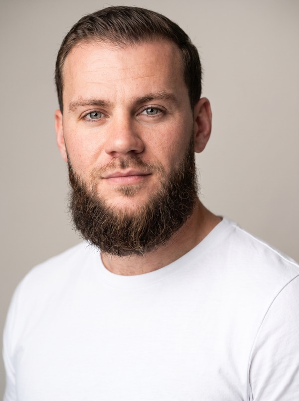

Ich baue KI-Automation,
die in Produktion läuft.
Mit Vertriebs-DNA.
Neun Systeme, allein auf die Beine gestellt und in Produktion gebracht, vom SaaS-Backend bis zur eigenen Server-Infrastruktur. Von der Idee über die Architektur bis zum Deployment orchestriere ich KI wie ein kleines Team und prüfe jedes Ergebnis selbst.

Was ich baue & betreibe
Drei Angebote. Ein System, das sie alle orchestriert.
Die Ebene darüber
OrchestrierungUltra Nexus OS
Die Schicht über allem. Ein Kommandozentrum, das meine Arbeit über alle Angebote hinweg orchestriert und automatisiert. Deshalb liefere ich als Einzelner das Tempo eines kleinen Teams.
Drei Angebote, jedes mit gebautem Beweis
Web Studio · Hamburg
Web & ShopifyWebsites und Shopify-Stores für den DACH-Raum. Eigene Liquid-Themes statt Vorlagen, zweisprachig, auf Conversion gebaut.
D2C-Store live seit Ende 2025, ein Kundenprojekt in Entwicklung.
GEO & SEO
SichtbarkeitGefunden werden in KI-Antworten (ChatGPT, Perplexity) und bei Google. Die neue Sichtbarkeit, für die es noch kein etabliertes SEO gibt.
Eigener GEO-Scanner als Beweis: 35/35 Tests grün, 19 live gegen echte Endpunkte.
KI-Automation & Systeme · der Kern
Ende zu EndeMaßgeschneiderte Automation und Software, Ende zu Ende gebaut und in Produktion gebracht. Architektur, Tests und Qualität in meiner Hand, KI-orchestriert umgesetzt. So liefere ich allein das Tempo eines kleinen Teams.
Beispiel: ein Multi-Agenten-System, das Firmen live recherchiert und jede Faktenzeile gegen eine Quelle prüft, mit Freigabe-Gate vor jeder Aktion.
Der Weg
Vom Kaltgespräch zum Deploy.
Automation-Builder, selbstständig
- Automations- und Software-Systeme eigenständig entworfen und in Produktion gebracht, von SaaS bis Server-Infrastruktur. Kein Team, kein Agentur-Budget.
- KI-orchestrierte Entwicklung: Architektur, Tests und Qualität führe ich selbst und setze KI-orchestriert um, wofür sonst ein kleines Team nötig wäre.
- Kunden-Deliveries für DACH-Gründer, von der ersten Anforderung bis zum Go-live.
B2B-Direktvertrieb (Door-to-Door)
- Rund 8.000 Kaltgespräche, über 200 Abschlüsse pro Monat, 85 bis 95 % Absagen am Tag. Resilienz, die kein Kurs lehrt.
- 60% Neukundenanteil, +15% Umsatz je Bestandskunde durch Cross- und Upselling. Gespräche direkt mit Inhabern und Geschäftsführern.
Berufsausbildung + laufende Weiterbildung
- Ich lerne durchs Bauen, nicht durch Kurse. Mein Nachweis sind Systeme, die überprüfbar in Produktion laufen.
Das Arsenal
Womit ich baue.
Ein breiter, aktueller KI- und Automations-Stack. Keine Buzzword-Liste, sondern täglich im Einsatz und über eine eigene Steuerungs-Ebene orchestriert.
▸ KI-Orchestrierung, der Kern
▸ Creative AI & Media
▸ Automation & Daten
▸ Web, Code & Infra
▸ Marketing & Vertrieb, die DNA darunter
Das Ziel
Mein Ziel ist Zürich.
Für die richtige Rolle ziehe ich um. Das Timing halte ich flexibel und stimme es gern mit dir ab. Als EU-Bürger mit Anspruch auf Bewilligung B ist die Anstellung unkompliziert: kein Kontingent, kein Anwalt, keine Hürde für dich als Arbeitgeber.
Fakten
Wo ich passe
Am stärksten dort, wo jemand KI und Automation baut und deployt: Automation- und AI-Engineering, Digitalisierung, Solutions-Engineering an der Schnittstelle zum Kunden. Die Vertriebs-DNA ist der Bonus, nicht der Kern.
Frag mich
Chat mit Jason
Die häufigsten Fragen habe ich schon beantwortet. Klick eine an oder tipp deine eigene.
Reden wir
Fünfzehn Minuten.
Hier als Beweis, nicht als Behauptung. Ich zeige meine Systeme am liebsten live am Code.
jason@roschmann-digital.de · +49 155 612 953 91